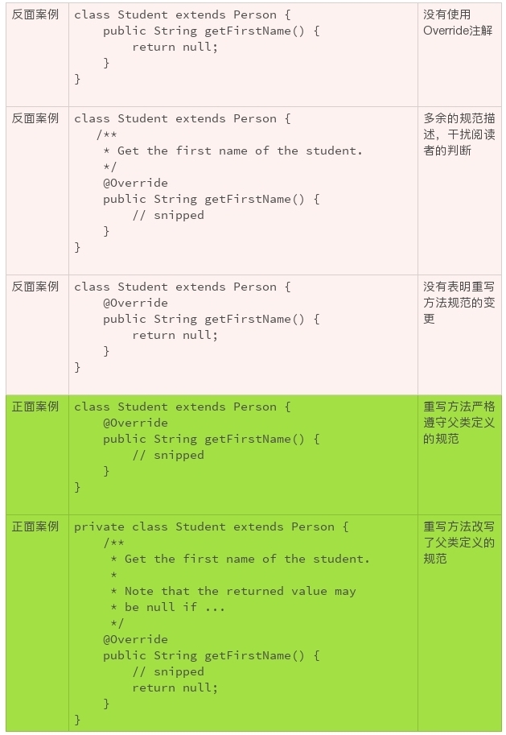

- 00 开篇词 你写的每一行代码，都是你的名片.md
- 01 从条件运算符说起，反思什么是好代码.md
- 02 把错误关在笼子里的五道关卡.md
- 03 优秀程序员的六个关键特质.md
- 04 代码规范的价值：复盘苹果公司的GoToFail漏洞.md
- 05 经验总结：如何给你的代码起好名字？.md
- 06 代码整理的关键逻辑和最佳案例.md
- 07 写好注释，真的是小菜一碟吗？.md
- 08 写好声明的“八项纪律”.md
- 09 怎么用好Java注解？.md
- 10 异常处理都有哪些陷阱？.md
- 11 组织好代码段，让人对它“一见钟情”.md
- 12丨组织好代码文件，要有“用户思维”.md
- 13 接口规范，是协作的合约.md
- 14 怎么写好用户指南？.md
- 15 编写规范代码的检查清单.md
- 16丨代码“规范”篇用户答疑.md
- 17 为什么需要经济的代码？.md
- 18丨思考框架：什么样的代码才是高效的代码？.md
- 19 怎么避免过度设计？.md
- 20 简单和直观，是永恒的解决方案.md
- 21 怎么设计一个简单又直观的接口？.md
- 22丨高效率，从超越线程同步开始！.md
- 23 怎么减少内存使用，减轻内存管理负担？.md
- 24 黑白灰，理解延迟分配的两面性.md
- 25 使用有序的代码，调动异步的事件.md
- 26 有哪些招惹麻烦的性能陷阱？.md
- 27 怎么编写可持续发展的代码？.md
- 28 怎么尽量“不写”代码？.md
- 29 编写经济代码的检查清单.md
- 30丨“代码经济篇”答疑汇总.md
- 31 为什么安全的代码这么重要？.md
- 32 如何评估代码的安全缺陷？.md
- 33 整数的运算有哪些安全威胁？.md
- 34 数组和集合，可变量的安全陷阱.md
- 35 怎么处理敏感信息？.md
- 36 继承有什么安全缺陷？.md
- 37 边界，信任的分水岭.md
- 38 对象序列化的危害有多大？.md
- 39 怎么控制好代码的权力？.md
- 40 规范，代码长治久安的基础.md
- 41 预案，代码的主动风险管理.md
- 42 纵深，代码安全的深度防御.md
- 43 编写安全代码的最佳实践清单.md
- 44 “代码安全篇”答疑汇总.md
- Q&A加餐丨关于代码质量，你关心的那些事儿.md
- 结束语 如何成为一个编程好手？.md
09 怎么用好Java注解？
如果你使用面向对象的概念和技术有一段时间了，不知道你会不会有这样的困惑： 面向对象技术带来的麻烦，一点都不比它带来的好处少！
比如说，我们辛辛苦苦继承了一个类，重写了它的方法。过几天，这个类居然修改了它的接口，而且没人通知我们。然后，我们写的子类还可以美滋滋地编译，运行，就是总出错误，怎么调试都没发现这个子类的实现有什么不妥。直到有人说，父类变了！这时候，我们就想找杯咖啡暖暖手，一个人静静。
面向对象技术确实有它值得傲娇的地方。但是，只有把类似上面的小麻烦解决掉，它的使用才更合理。 比如说，父类做了修改，能不能立即就通知我？ 别等到问题出现了，我们还被蒙在鼓里。
Java注解就可以帮助我们。
什么是Java注解
Java注解是Java 1.5引入的一个工具，类似于给代码贴个标签，通过注解可以为代码添加标签信息。这些标签信息可以添加在字段、方法和类上。开发工具、部署工具或者运行类库，可以对这些标签信息进行特殊的处理，从而获得更丰富的功能。
经过十多年的发展，注解已经成了Java生态系统一个非常重要的技术。使用注解可以大幅度降低我们的开发强度，提高工作效率，减少潜在的错误。像Java类库一样，注解也有了越来越丰富的定义和规范，成了我们需要掌握的重要技术之一。
我们这里只讨论编写规范的代码时，该怎么合理地使用注解，具体就是Override、Deprecated、SuppressWarnings这三个注解。更详细的Java注解技术和规范，以及如何自定义注解，需要你参考相关的文档。
在声明继承关系中，Java注解该如何使用？
在代码编写中，继承和重写是面向对象编程的两个重要的机制。这两个机制，在给我们带来便利的同时，也顺便带来了一些麻烦，这就需要我们用到注解了。
第一个麻烦是，识别子类的方法是不是重写方法。比如下面的例子，在一般情况下，对代码阅读者来说，最直觉的感受就是，getFirstName()这个方法不是重写方法，父类Person没有定义这个方法。
class Student extends Person {
// snipped
public String getFirstName() {
// snipped
}
// snipped
}
通常如果一个方法是重写方法，一定要使用Override注解，清楚地标明这个方法是重写的方法。 使用Override 注解的另一个好处是，如果父类更改了方法，子类的编译就会出错。这样我们就能在第一时间获得通知，既可以及时地变更子类，也可以使父类的变更更加合理。
class Student extends Person {
// snipped
@Override
public String getFirstName() {
// snipped
}
// snipped
}
为什么要识别重写方法呢？这是因为继承的第二个麻烦。
第二个麻烦是，重写方法可以不遵守父类方法的规范。面向对象编程的机制，理想的状况是，父类定义了方法和规范，子类严格地遵守父类的定义。 比如Person.getFirstName()要求返回值是一个人的名，不包括姓氏部分，而且不可以是空值。但是子类Student.getFirstName()的实现完全有可能没有严格遵守这样的规范，不管是有意的，或者是无意的。 比如，返回了姓氏，或者返回了包括姓氏的姓名，或者可以返回了空值。
class Student extends Person {
// snipped
@Override
public String getFirstName() {
return null;
}
// snipped
}
编译器无法检查重写到底该怎么实现，保持重写方法的行为一致需要我们凭借经验、肉眼识别。一般来说，一个重写方法不应该改变父类定义的规范。如果的确需要改变，就要有充足的理由，以及面对潜在兼容问题的具体的解决办法。
比如上面的例子中，如果Person.getFirstName()不允许返回空值，应用程序可以很安心地使用返回值，而不需要检查空值。
boolean isAlice(Person person) {
return person.getFirstName().equals("Alice");
}
但是，有了可以返回空值的Studen.getFirstName()的重写，上面的代码就可能抛出NullPointerException。一段简单的、严格遵守规范的代码，就变得危机四伏。
既然需要肉眼的判断，第一步就是要识别出重写方法。 识别方法越简单越好。
所以，重写的方法，一定要加上Override注解。这个注解，既可以提醒代码的阅读者，也提醒代码的书写者，要谨慎对待该方法在父类定义的规范。
识别出重写方法后，第二步就要判断重写的方法和父类规范的定义有没有冲突和抵触。
虽然一般情况下，子类的重写方法不应该改变父类的规范。但是，编写代码处处充满了无奈和妥协。极少数情况下，除了变更方法的规范，我们可能别无选择。 一旦这种情况发生，一定要明确标明，并注明潜在的后果。
如果重写方法既没有改变父类规范，也没有其他情况需要重点说明，重写方法就不应该有规范描述部分的存在。这样，可以减少规范描述对于阅读者的误导。我们当然需要了解具体的规范，但是应该查找、阅读父类的规范描述。

- 继承和重写还有一些其他的麻烦，我们后面的章节接着再聊。在废弃退役接口的情况下，如何使用注解？
一个软件，部署得越广泛，生命力越悠久，就越需要不断地改进、升级。而废弃不合理的设计，拥抱更新的思想，也是软件改进的一部分。
然而，软件接口的废弃，不是一件简单的事情。越是广泛使用的接口，它的废弃、退役越困难。
比如，下面的String构造方法，是1994年Java 1.0设计实现的方法。很快，人们发现了这个方法的局限性。在1997年发布的Java 1.1中，废弃了该构造方法以及其他相关的方法。到现在，已经废弃20多年了，但Java依然没有删除这些方法，因为String的使用太广泛了！
@Deprecated(since="1.1")
public String(byte ascii[], int hibyte) {
this(ascii, hibyte, 0, ascii.length);
}
无论对于软件的维护者，还是软件的使用者，废弃的接口都是不值得让我们继续耗费精力的。
如果软件的维护者继续在废弃的接口上投入精力，意味着这个接口随着时间的推移，它的实现可能会存在各种各样的问题，包括严重的安全问题，就连使用者也要承担这些风险。而且还会有用户持续把它们运用到新的应用中去，这就违背了废弃接口的初衷。更多的使用者加入危险的游戏，也增加了删除废弃接口的难度。
这就要求我们做好两件事情。
第一件事情是，如果接口的设计存在不合理性，或者新方法取代了旧方法，我们应该尽早地废弃该接口。
及时止损！
做好这件事情，需要我们使用Deprecated注解，并且用一切可以使用的办法，广而告之。对于代码而言，要在声明中使用Deprecated注解；在规范描述中，说明废弃的原因以及替代的办法；对于有计划要删除的接口，要注明计划删除的版本号。
下面是两个可以参照的Java代码废弃接口的例子：
java/lang/String.java:
/**
* Counts the number of stack frames in this thread. The thread must
* be suspended.
*
* @return the number of stack frames in this thread.
* @throws IllegalThreadStateException if this thread is not
* suspended.
* @deprecated The definition of this call depends on
* {@link #suspend}, which is deprecated. Further,
* the results of this call were never well-defined.
* This method is subject to removal in a future
* version of Java SE.
* @see StackWalker
*/
@Deprecated(since="1.2", forRemoval=true)
public native int countStackFrames();
java.security.Certificate.java:
/**
* <p>This is an interface of abstract methods for managing a
* variety of identity certificates.
*
* ... snipped ...
*
* @deprecated This class is deprecated and subject to removal
* in a future version of Java SE. It has been replaced by
* {@code java.security.cert.Certificate} and related classes.
* @see java.security.cert.Certificate
*/
@Deprecated(since="1.2", forRemoval=true)
public interface Certificate {
// snipped
}
第二件事情是，如果我们在现有的代码中使用了废弃的接口，要尽快转换、使用替换的方法。等到废弃方法删除的时候，再去更改，就太晚了，不要等到压力山大的时候才救火。
如果一个接口被废弃，编译器会警告继续使用的代码。Java提供了一个不推荐使用的注解，SuppressWarnings。这个注解告诉编译器，忽略特定的警告。警告是非常有价值的信息，忽略警告永远不是一个最好的选项。
再次强调，除非万不得已，不要使用SuppressWarnings。如果万不得已来临，请参考下面的例子。
@SuppressWarnings("deprecation")
private boolean myMethodUseDeprecatedMethod() {
// snipped
}
当然，这样的使用带来了一系列的后遗症。 由于，废弃的编译警告被无视，我们使用了废弃接口的事实就被淹没在代码的海洋里，再也进入不了我们的视野。不到废弃接口被删除的那一天，我们都意识不到我们的代码里使用了废弃的接口，我们的应用程序都要承担着废弃接口维护不足的种种风险，包括严重的安全风险。
后面我们还会谈到，不要轻易地更改现有的代码，即使这些代码很丑陋，散发着浓浓的腐臭味。但是，有一个例外，如果看到了使用SuppressWarnings的代码，我们要尽可能地想办法把相关的警告消除掉、把这个注解去掉，越快越好。
小结
Java注解的功能很丰富，了解注解可以使得我们编码的工作更轻松。 这一次，希望我们记住三个基本的实践：
- 重写的方法，总是使用；
- 过时的接口，尽早废弃；
- 废弃的接口，不要使用。
一起来动手
Java的注解非常丰富，功能也很强大。借这个机会，我想让大家互相分享一下，你最经常使用的注解是什么？什么情况下使用这个注解？这个注解给你带来哪些便利？欢迎你把你的经验发布在评论区，我们一起来学习更多的注解，一起来进步。
也欢迎你把这篇文章分享给你的朋友或者同事，一起来探讨吧！
© 2019 - 2023 Liangliang Lee. Powered by gin and hexo-theme-book.